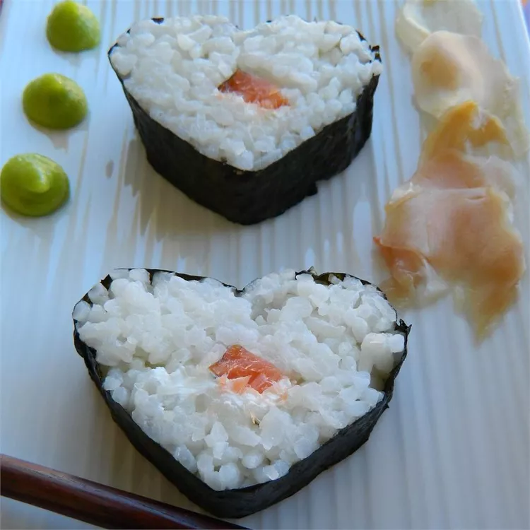

Salmon Sushi

Description
I used to order the same thing every time we went to our favourite sushi restaurant in California. When I moved to the continent, I missed the dish so much, I've created a similar roll, but easier to make. Not quite Takara's Charlie Special, but almost as good.
Ingredients
-
2 sheets nori (dry seaweed)
-
1 cup uncooked medium grain white rice
-
1 ¼ cups water
-
1 ½ tablespoons rice vinegar
-
1 ½ tablespoons white sugar
-
1 pinch salt
-
3 ounces cold cream cheese, cut into thin strips, divided
-
2 teaspoons crushed garlic, divided
-
½ cup crushed cashews, divided
-
2 green onions, finely chopped, divided
-
2 ounces smoked salmon, cut into strips, divided
-
soy sauce
-
wasabi paste
Steps
- Wash the rice in several changes of water until the rinse water is almost clear, then drain well. Place the rice and 1 1/4 cups water into a large saucepan with a lid, bring to a boil, reduce the heat to low, and cover. Simmer the rice until the top looks dry and the water has been absorbed, 15 to 20 minutes. Remove the rice from the heat and allow to sit covered for 20 more minutes to steam.
-
Mix the rice vinegar, sugar, and salt into the rice with a wooden spoon, and spread the rice out onto a metal sheet pan to cool.
-
Preheat an oven to 350 degrees F (175 degrees C).
-
Put the first sheet of nori in the oven for 4 minutes to soften. Remove and place shiny-side down on a plastic-wrapped bamboo mat, so the longer side is left-to-right. (The wrap is not essential, but helps keep things clean.) With wet hands, press a layer of rice onto the nori, leaving a 1/2-inch margin on the edge nearest you, and an inch on the farthest-away side. The layer should be roughly 1/2-inch deep, and as flat as possible.
-
Lay half the slices of cream cheese in a horizontal line in the center of the sheet. Sprinkle with 1/2 teaspoon garlic, half the crushed cashews, and half the spring onions. Arrange half the strips of smoked salmon next to the cream cheese.
-
Pick up the edge of the bamboo rolling sheet, fold the bottom edge of the sheet up, enclosing the filling, and tightly roll the sushi into a firm cylinder. Brush a line of water across the remaining edge of the nori sheet, and press and roll the sheet to seal the roll together. Once the sushi is rolled, wrap it in the mat and gently squeeze to compact it tightly. Repeat with the second sheet of nori and the remaining fillings.
-
Cut each roll into 6 slices using a very sharp, wet knife. Have a damp paper towel handy to wipe off any residue, and wet the blade with water for each cut. Serve with soy sauce and wasabi paste.